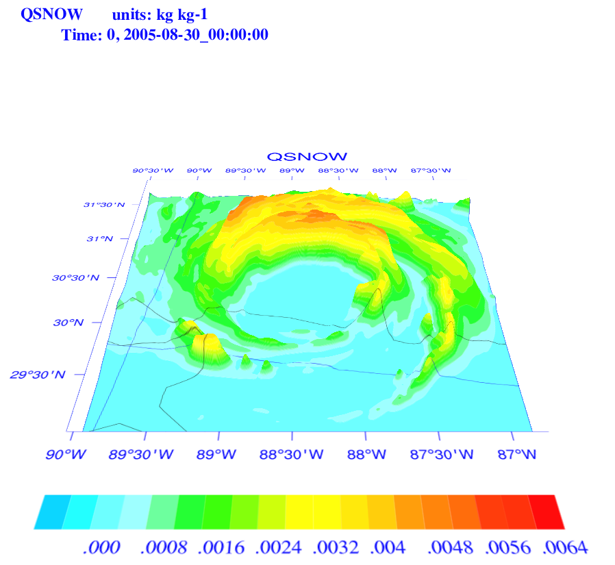
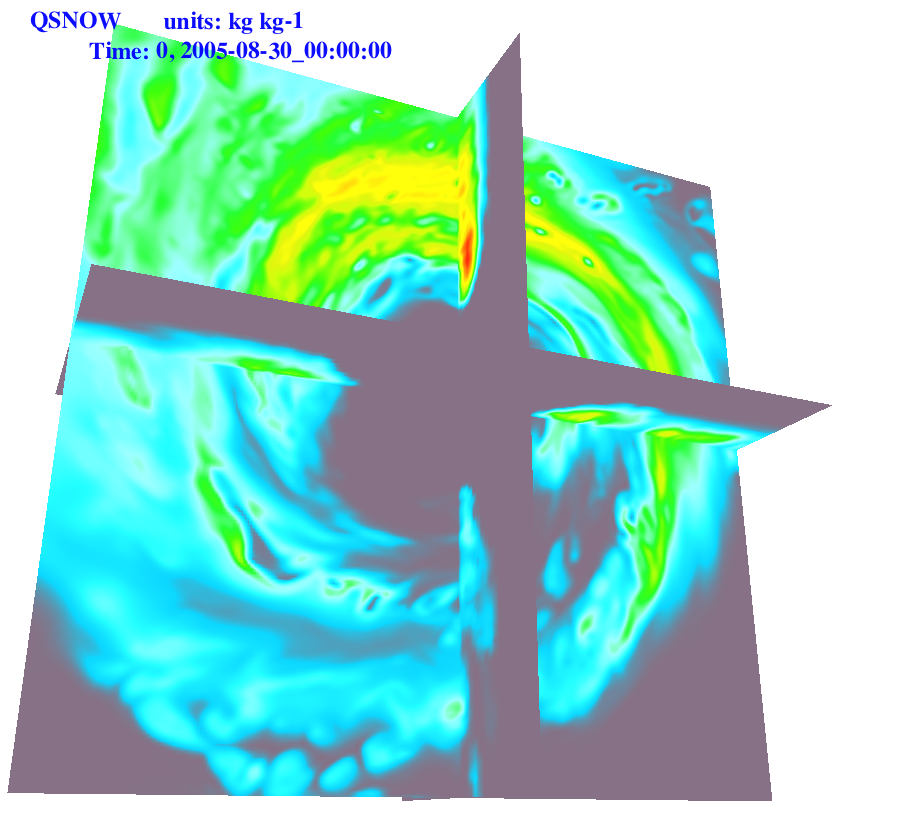
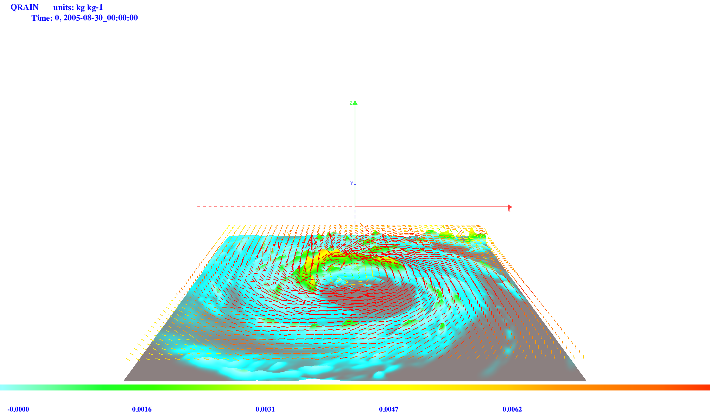
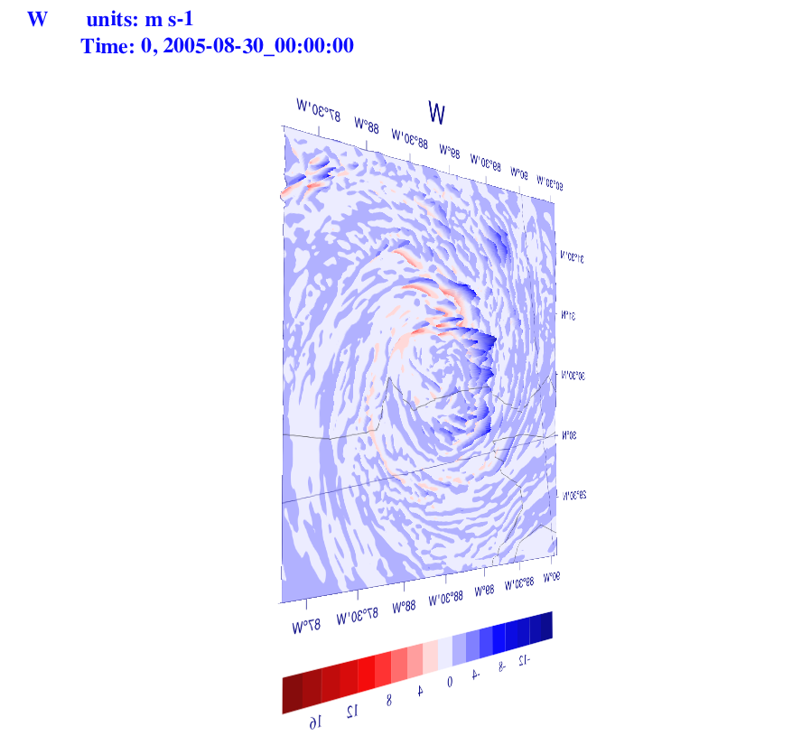
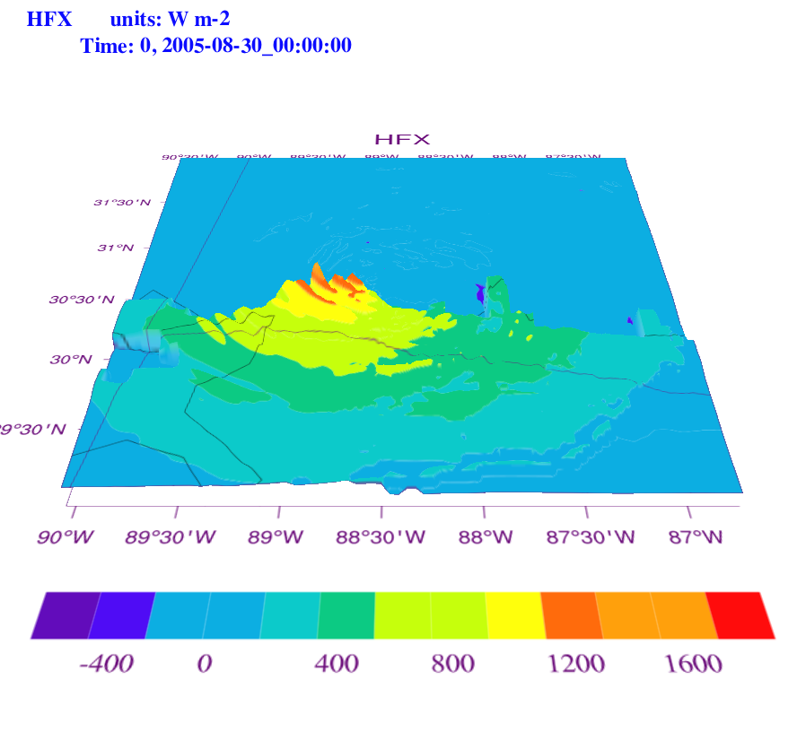

NV for WRF
WRF can be visualized with native NCL and/or OpenGL.
Users may go to SITE
to learn how to plot WRF data with NCL.
An image of QSNOW (with BUMP effects).

An image of QSNOW (with cross-sections).

An image of QRAIN with Wind-Vector.

An image of W (viewing the opposite of the bumped field).

An image of HFX.

A movie of Wind Vector (It only has two time levels, but looped many times)
A WRF Wind Vector Movie.